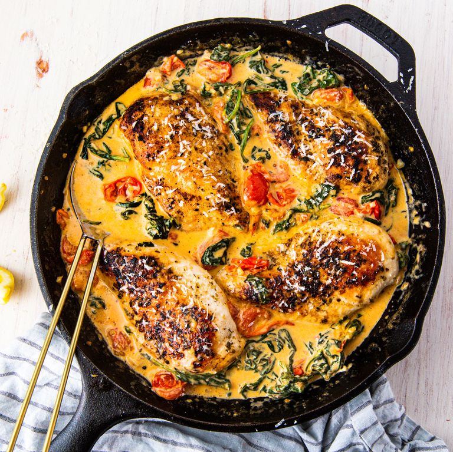

Creamy Tuscan Chicken

Description
In the image above is a Creamy Tuscan Chicken I made based off a TikTok I saw. This was a hit with my family and all who tried it.
Ingredients
- 1 tablespoon extra virgin olive oil
- 4 boneless skinless chicken breasts
- Pink himalayan salt to taste
- Freshly ground black pepper to taste
- 1 teaspoon dried oregano
- 3 tablespoons of butter
- 3 cloves of garlic, minced
- 1 1/2 cups of cherry tomatoes, halved
- 3 cups of baby spinach
- 1/2 cup heavy cream
- 1/4 cup freshly grated parmesan
Steps for cooking
- In a pan over medium heat, heat your oil. Add chicken and season with salt, pepper and oregano. Cook until golden and no longer pink, about 8 minutes per side. Remove from pan and set aside to rest.
- In the same pan over medium heat, melt butter. Stir in garlic and cook until fragrant, about 1 minute. Add cherry tomatoes and season with salt and pepper. Cook until tomatoes are beginning to burst then add spinach and cook until spinach is beginning to wilt.
- Stir in heavy cream and parmesan and bring mixture to a simmer. Reduce heat to low and simmer until sauce is slightly reduced, about 3 minutes. Return chicken to skillet and cook until heated through, about 5 to 7 minutes.
- Serve with bread or as is. Enjoy!